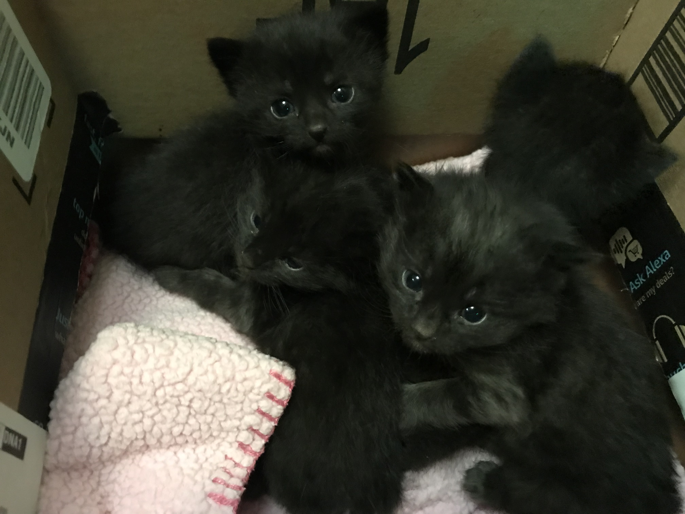
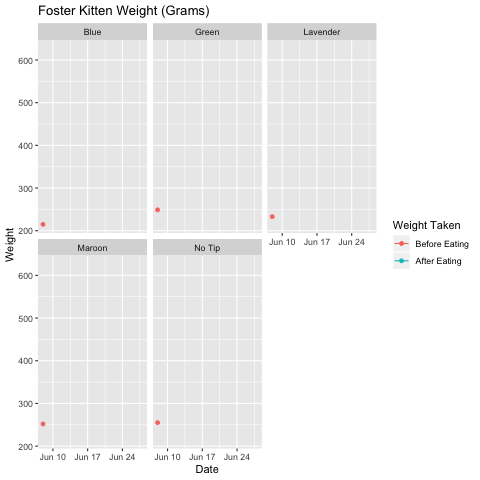

My partner brought home a box of three week old kittens that had been brought to her work. The man who found them said that during a heavy rainstorm heard tiny meows in his yard and then saw a little kitten face scrambling to get out of a depression. He went to rescue the baby kitten and found FIVE kittens, most of them were totally submerged in rising water.
When we got the kittens home, I did the best thing I knew how to do: start collecting data on their growth.
We color coded their tail tips with the nail polish we had on hand which led to their color names.
I made a quick Excel workbook to collect the date, weight in grams, and comments for each cat. A few days later, I forgot to weigh before dinner so I weighed after eating. I realized that it would be a good way to track their food consumption. I’m glad I took the two measures. The kittens got a little older and very wiggly before meals. The measurement error would have another measurement to track average growth.
The First Week of Fostering
The Second Week of Fostering
Now Plot Their Progress
Load some packages and data. I used the forcats package to recode factors and was looking for a way to use purrr but didn’t have a good use case.
library(knitr)
library(tidyverse)
library(gganimate)
library(sjPlot)
load("Kittens.Rda")
kable(head(kittens))| Date | Cat | Weight | Pre_post.eating | Comments |
|---|---|---|---|---|
| 2019-06-08 | Blue | 215 | Pre-eating | Goopy eyes. Applied antibiotics. |
| 2019-06-08 | Green | 249 | Pre-eating | Gave eye antibiotics |
| 2019-06-08 | Lavender | 233 | Pre-eating | NA |
| 2019-06-08 | Maroon | 252 | Pre-eating | NA |
| 2019-06-08 | No Tip | 255 | Pre-eating | NA |
| 2019-06-09 | Green | 265 | Pre-eating | Diarrhea; eye antibiotics |
Plotting Kitten Growth
The raw data need a bit of recoding. I do several things in the next block:
- Make a color variable to use in the plots.
- Re-code the “weight.taken” variable so that it will be correct in the plots.
- Order the weight.taken variable levels so that the before eating comes first.
- Make a sex variable based on the cat’s sex.
- Make a numeric date variable that will be used in the regression. Zero is the first day.
kittens.coded<-kittens %>%
mutate(color=fct_recode(Cat,
"black" = "No Tip",
"violet" = "Lavender" ),
color=tolower(color),
weight.taken=fct_recode(Pre_post.eating,
"Before Eating" = "Pre-eating" ,
"After Eating" = "Post-eating"),
weight.taken=fct_relevel(weight.taken,"Before Eating"),
sex=fct_collapse(Cat,
female= c("Blue", "Maroon"),
male= c("Green", "Lavender", "No Tip")),
day.num=as.numeric(Date)-18055)Now to plot with ggplot2
kittentraj<-kittens.coded %>%
ggplot(aes(Date, Weight, color=Cat)) +
geom_line() +
scale_color_manual(values = kittens.coded$color)+
facet_grid(~ weight.taken) +
ggtitle("Foster Kitten Weight (Grams)")
kittentraj
It is also helpful to split the plots by each kitten so that we can see their weight pre- and post-eating easier.
kittens.sep<-kittens.coded %>%
ggplot(aes(Date, Weight, color=weight.taken)) +
geom_line() +
facet_wrap(~ Cat) +
ggtitle("Foster Kitten Weight (Grams)") +
labs(color = "Weight Taken")
kittens.sep
Animating Plots
I wanted to play around a bit more with the gganimate package so I made gifs of the growth charts.
kittentraj +
geom_point(aes(group = seq_along(Date))) +
transition_reveal(Date)
kittens.sep +
geom_point(aes(group = seq_along(Date))) +
transition_reveal(Date)
Averaging growth trends
The daily data are a bit messy but look remarkably linear. I’m interested in how fast they are growing every day and whether the cats are differing in their growth trajectories. To test this, I can estimate a logistic regression model that includes the day number and controlling for measurement time and which cat is weighed.
The intercept is when all independent variables equal 0 or substantively: the average weight in grams for Blue after eating on the first day she came home.
I added sex to the model but ran into an identification issue. Since all the measurements for each cat are either male or female controls for the cat and sex can’t be included in the same model. A multilevel model with random intercept for cats can do this and shows that the female cats are slightly smaller than the males but there is not a lot of variation between cats.
weightlm<-lm(Weight ~ day.num + Pre_post.eating + Cat, kittens.coded)
summary(weightlm)##
## Call:
## lm(formula = Weight ~ day.num + Pre_post.eating + Cat, data = kittens.coded)
##
## Residuals:
## Min 1Q Median 3Q Max
## -44.245 -8.037 -0.588 7.618 40.804
##
## Coefficients:
## Estimate Std. Error t value Pr(>|t|)
## (Intercept) 243.2866 3.4022 71.509 < 2e-16 ***
## day.num 16.5599 0.1946 85.099 < 2e-16 ***
## Pre_post.eatingPre-eating -17.5656 2.1596 -8.134 1.15e-13 ***
## CatGreen 28.5020 3.3920 8.403 2.38e-14 ***
## CatLavender 7.8313 3.3920 2.309 0.022252 *
## CatMaroon 11.4242 3.3914 3.369 0.000949 ***
## CatNo Tip 25.3505 3.3920 7.474 5.02e-12 ***
## ---
## Signif. codes: 0 '***' 0.001 '**' 0.01 '*' 0.05 '.' 0.1 ' ' 1
##
## Residual standard error: 13.78 on 158 degrees of freedom
## Multiple R-squared: 0.9797, Adjusted R-squared: 0.9789
## F-statistic: 1269 on 6 and 158 DF, p-value: < 2.2e-16The Kittens grow 16.5g per day on average!!
A few plots can be made to show the predicted weight of a cat over time and differences in the average weight of the cats.
plot_model(weightlm, type = "pred", terms = c("day.num"))
plot_model(weightlm, type = "pred", terms = c( "Cat"),
colors = kittens.coded$color)
Blue looks to be really small in the last graph, but it does not take time into account.

To examine trajectory differences, create an interaction term between day and Cat.
The resulting plot shows the average trajectories of each cat.
weightlm.int<-lm(Weight ~ day.num + Pre_post.eating + Cat*day.num, kittens.coded)
summary(weightlm.int)##
## Call:
## lm(formula = Weight ~ day.num + Pre_post.eating + Cat * day.num,
## data = kittens.coded)
##
## Residuals:
## Min 1Q Median 3Q Max
## -38.766 -8.257 -0.451 7.525 31.670
##
## Coefficients:
## Estimate Std. Error t value Pr(>|t|)
## (Intercept) 253.5011 5.0802 49.900 < 2e-16 ***
## day.num 15.5791 0.4178 37.284 < 2e-16 ***
## Pre_post.eatingPre-eating -17.4895 2.0853 -8.387 2.97e-14 ***
## CatGreen 23.5565 6.9936 3.368 0.000956 ***
## CatLavender -15.1276 6.9894 -2.164 0.031977 *
## CatMaroon 0.6035 6.9893 0.086 0.931304
## CatNo Tip 12.7692 6.9936 1.826 0.069811 .
## day.num:CatGreen 0.4728 0.5910 0.800 0.424933
## day.num:CatLavender 2.1963 0.5908 3.717 0.000281 ***
## day.num:CatMaroon 1.0350 0.5908 1.752 0.081763 .
## day.num:CatNo Tip 1.2032 0.5910 2.036 0.043485 *
## ---
## Signif. codes: 0 '***' 0.001 '**' 0.01 '*' 0.05 '.' 0.1 ' ' 1
##
## Residual standard error: 13.29 on 154 degrees of freedom
## Multiple R-squared: 0.9816, Adjusted R-squared: 0.9804
## F-statistic: 819.5 on 10 and 154 DF, p-value: < 2.2e-16plot_model(weightlm.int, type = "pred", terms = c("day.num", "Cat"),
colors = kittens.coded$color)
They grow up so fast!